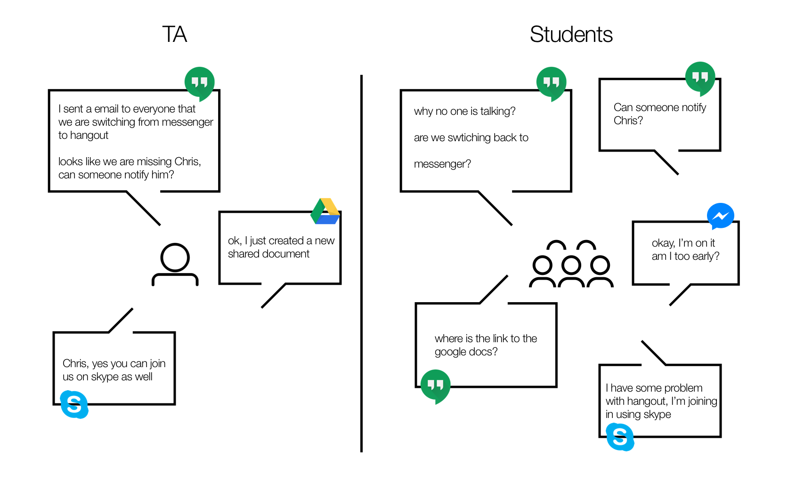
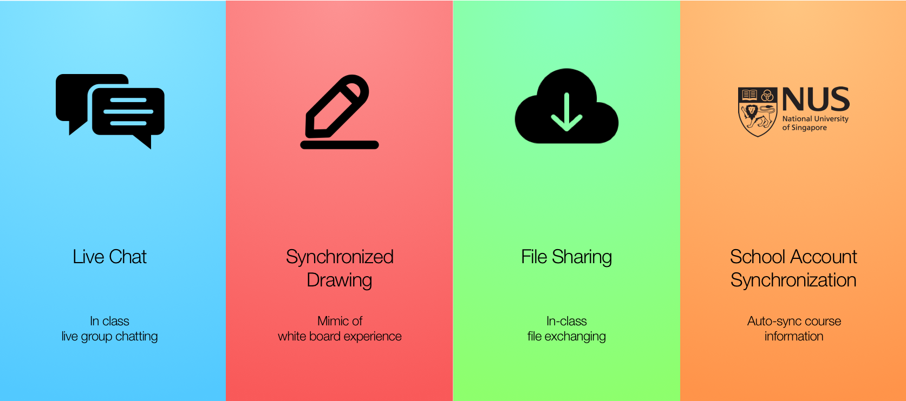
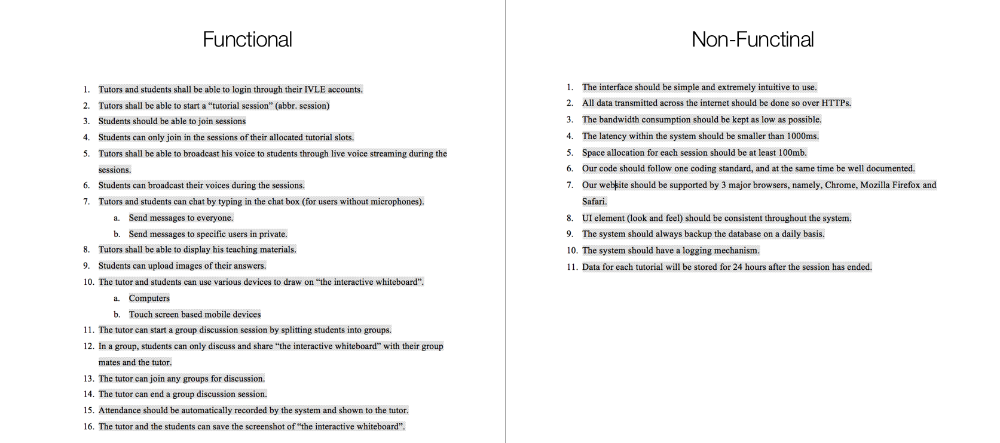

Reindeer
Interactive Online Tutorial Platform
My Role
UX Designer
Software Engineer
Project Manager
Code Repository
Practices
Web Design
Contextual Interview
Software Engineering
Project Management
Rapid Prototyping
Agile Development
Tools
Adobe Photoshop
Node.js + Express
WebRTC
Goal: "Integrated e-Tutorial Experience”
Background: NUS CS3283/4 "Media Technology" Class Project
The 2-semester long course aims to develop a media technology application under the practise of a start up environment. The whole project is built from bare ground and is pushed forward in an agile process. A new build is released for every 2 weeks.
Problem: Why people don't like online meetings?
Every year, NUS would conduct a "e-learning" week where no physical classes are given but only video records of lectures will be distributed. Watching lecture videos online is fine for students, however, the same approach doesn't work with tutorial sessions. When it comes to e-learning week, every TA is struggling to find "the best" application to give live tutorial sessions online.

Skype, Google Hangout, Facebook Messenger etc. --these are all great products in their field of specialization. However, none of them is customized for conducting online tutorial sessions. Where a lot of documents are being exchanged, writing and speaking happens at the same time, and TA usually prefers explaining things by hand drawings.
Solution: Integrated Online Tutorial Platform
We want to develop a one-stop solution to solve issues faced in using exisitng applications. Reindeer is aiming to present all the features that are essential to conducting tutorials online.

Project Roll Out
User Studies
The user studies were conducted in NUS campus. We interviewed both Teaching assistants and students on their experiences with conducting / attending tutorials online.
Basing on the interview results, we then listed a set of requirements for our application.
To prioritize our requirements, we devided them into "Functional" and "Non-Functional". Functional requirements are essential for completeness of the application. Non-functionals are good to have features if sufficient amount of time is given.

Minimal Viable Product
Every two weeks, we ship a new build of the product and have it for user testing, gaining feedbacks and enters the next iteration of development.
In each of the iteration, we aim to get at least one functional requirement implemented.
By developing in such a flow, we are able to deliver product at a faster pace and being more flexible in case sudden changes happen in user requirements.
Fullstack JavaScript
Backend developments usually uses a different programming language comparing to the frontend. In our project, we goes fullstack JavaScript because we believe using the same programming language helps both side in understanding each other's program flow.
On the front end. We use Vue.js for effective data-binding. On the back end, we use node.js + Express.js for fast server side structuring.
Debut
Final Version
After one year of development, Reindeer made its first offcial debut at 2016 School of Computing project showcase.
The project is then selected as a candidate of faculty-reserved Final Year Projects for future undergradutes to pick up and continue its development.